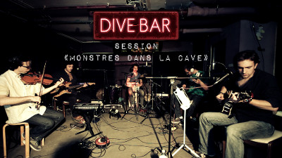
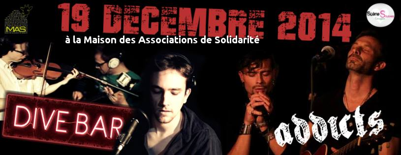
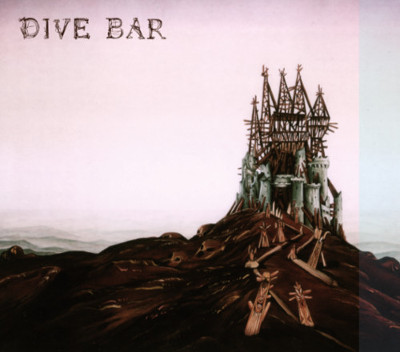

"Un dive bar, c'est un coin sombre et vivant, un comptoir moins cher qu'ailleurs recelant son lot de buveurs locaux et artistes paumés, où chaque 3, 4 ou 5ème verre est offert, où l'on prend rendez-vous avec une bonne dose de désespoir ou de contentement au verre."Laurent P. Weber
Une explosion constante, une energie tombée de scène, des mélodies envoutantes et sans scrupules.
Définition : Lieu de débauche, de vice caché, où règne une atmosphère douteuse...
Entrez dans l'univers du Dive Bar !
Un monde énervé, puissant et fantasmagorique... au risque de vous y plaire...!
Groupe de rock français situé en région parisienne, Dive Bar explore des univers bizarres et ténébreux.
16 Janvier 2015
Notre 3ème vidéo est en ligne : Malaxe d'Alain Bashung!
19 Décembre 2014
18 Octobre 2014
Premier concert de la rentrée : l'évènement facebook en cliquant sur l'image!
10 Octobre 2014
Notre 2ème vidéo est en ligne : Rosa dispo en cliquant sur l'image!
12 Septembre 2014
Enfermés pendant un court week-end, les monstres se sont acharnés à donner le meilleur d'eux-mêmes de prises en prises et de courbatures en courbatures. Voici donc la 1ère vidéo issue de ces enregistrements : Mr Personne. Cliquez sur l'image pour accéder à la vidéo!
13 Janvier 2014
L'ep de Dive Bar : vous pouvez nous contacter pour en commander ! Le CD avec un design de Philippe Druillet avec un livret et une illustration de chaque chanson par Alexandre Paulmier est à 8 euros et parce qu'on est de bon gars, les frais de port sont offerts ! L'album est en libre écoute en cliquant sur la pochette de l'album!
Enfermés pendant un court week-end, les monstres se sont acharnés à donner le meilleur d'eux-mêmes de prises en prises et de courbatures en courbatures. Cet album expérimente de nouvelles voies musicales au travers de nouvelles compositions et reprises.
L'ep de Dive Bar : vous pouvez nous contacter pour en commander ! Le CD avec un design de Philippe Druillet avec un livret et une illustration de chaque chanson par Alexandre Paulmier est à 8 euros et parce qu'on est de bon gars, les frais de port sont offerts ! L'album est en libre écoute en cliquant sur la pochette de l'album!
Bande original du court métrage "Le Revenant", réalisé en 2012 par Victor Druillet et Norman Jangot, avec Thibault Fraisse dans le rôle principal.
Un jeune homme pense qu'il suffit de le vouloir pour ne pas mourir. Il saute de son balcon... Et ça marche! Mais pas seulement, il développe alors un sixième sens qui lui permet de percevoir une étrange silhouette noire que personne d’autre ne semble remarquer...
Chanteur et guitariste du groupe depuis sa formation en 2008, il prend des cours de chant avec Caroline Rose.
Il est l'auteur des paroles des chansons, souvent teintés de macabre et de double sens.
Il est aussi réalisateur de court-métrage et de web-série dont Les Tutos de la Vie. Il affine ses talents derrière la caméra en réalisant en 2011 le clip "Hurt Time" pour le groupe puis en 2014, la session "Les Monstre dans la Cave".
Violoniste de formation classique formé à l’école de Musique de Castelnaudary auprès de Céline Lesage. Il découvre et s’initie aux musiques traditionnelles bretonne et irlandaise et continue actuellement la pratique classique au Conservatoire d’Issy-les-Moulineaux.
Il rencontre Dive Bar en Mai 2013 et développe ses connaissances webs en concevant le site internet du groupe.
Il fait aussi partie d'un trio classique Adesso Trio avec Gabrielle Rousseau et Tania Pamard et d'un duo avec Erwan Houssay, flûtiste breton.
Il gagne sa croûte comme ingénieur en système embarqué, se nourrissant d'une curiosité sans limite!
Guitariste et bassiste depuis 12 ans en autodidacte après une formation classique en violon pendant 5 ans. Fortement influencé par la musique blues, il a joué dans plusieurs formations jazz-funk avant de rentrer dans le vif du Dive Bar en 2010.
Il met en place au sein du groupe un jeu de guitare ambiance qui va de la nappe mystérieuse à la saturation acide !
Ingénieur de formation, il se passionne pour le matériel audio et la lutherie (guitares et pédales fabriquées de ses propres mains).
Actuellement basé à Bordeaux où il participe à une nouvelle formation funk-rock.
Son sexe d'une taille remarquablement élevée lui confie une notoriété reconnue dans le nord du Japon ainsi que dans tout l'Afrique du Sud.
Après une carrière sportive, il se dirige petit à petit vers la musique. Tout d'abord pour tuer le temps après une blessure importante au genou puis ayant le virus.
Fils et frère de guitariste, il apprend les rudiments de la musique et du jeu en groupe à travers cet instrument: décrocher quelques minutes de gloire lors des scènes ouvertes des bars bordelais devient alors le saint graal !
La basse est devenue une évidence en découvrant des ténors tels que Juan Nelson et Victor Wooten. Fraîchement arrivé sur Paris, il s'accoquine rapidement avec ces gais lurons fan de la scène rock bordelaise. Quelques bricoles plus tard... le voici embarqué dans l'aventure Dive Bar.
Chanteur, multi-instrumentiste et percussionniste d'origine algérienne, Madjid est - THE - champion de l'animation! Sa fraîcheur est grandement appréciée partout où il passe!
Parcourant émissions de radio, chaînes de télévision, rencontrant des grands artistes de la scène française (Jacques Higelin, Alain Souchon, Laurent Voulzi, Titi Robin, Salvadore Adamo), il acquiert une très solide expérience de scène et une inconstestable stabilité rythmique.
Membre de Dive Bar depuis 2014, il apporte son expérience, son univers et expérimente de nouvelles palettes sonores.
Sur un air nocturne, une levée de fantômes
Menée par une diable au dessin improbable
Soulevant les tombes oubliés sous le sable
Exhuma lentement de putrides arômes
Sous une lune tordue, mister Nobody est revenu
Soufflant sur les cendres d'un des corps mal enterré
Par un fossoyeur à la descente aisée
Surgit de ces chairs fragmentées, une goule
Au fond tendre, déversant des versets mal contenus.
Sous une lune tordue, mister Nobody est revenu
D'une lâchée de pisse spontanée comme une fissure de l'aorte
Se forma sous son séant une marre d'acide blanc
Lui permettant d'éviter les balles Dellamorte
Et de se tirer tout de dédain, par la grande porte d'entrée
Sous une lune tordue, mister Nobody est revenu
La recette simple décoction
De rétine d'alligator et
Liqueur blême, un soupçon
Nous ramène entre les porcs
Sacrifiés à la décomposition
Un sourire, un effort...
On accueil le règne, le règne des morts...
On accueil le règne, le règne des morts...
On accueil le règne, le règne des morts...
Oh toi!
Toi qui enfle en moi!
Oh oui toi!
Qui me dissuadera!
De m’asseoir et de boire,
De célébrer le trône.
Oh toi!
Qui me surprendra,
Les lèvres aux abois,
Brûlante au bout des doigts,
A chaque fois
Que je tombe un bourgogne
Que j'embrasse le trombone.
Oh toi!
Oh toi!
Toi qui n'est plus là,
Je me vide déjà
De toi.
Tu résonnes encore au rythme du palpitant,
Mes entrailles te déclarent lieutenant,
Aux portes de l'enfer,
Le carbone et le souffre
Dynamite mortifère
Pétarade dans le gouffre.
Oh toi!
Asséché sans toi,
Tu me manques déjà...
Tu me manques déjà...